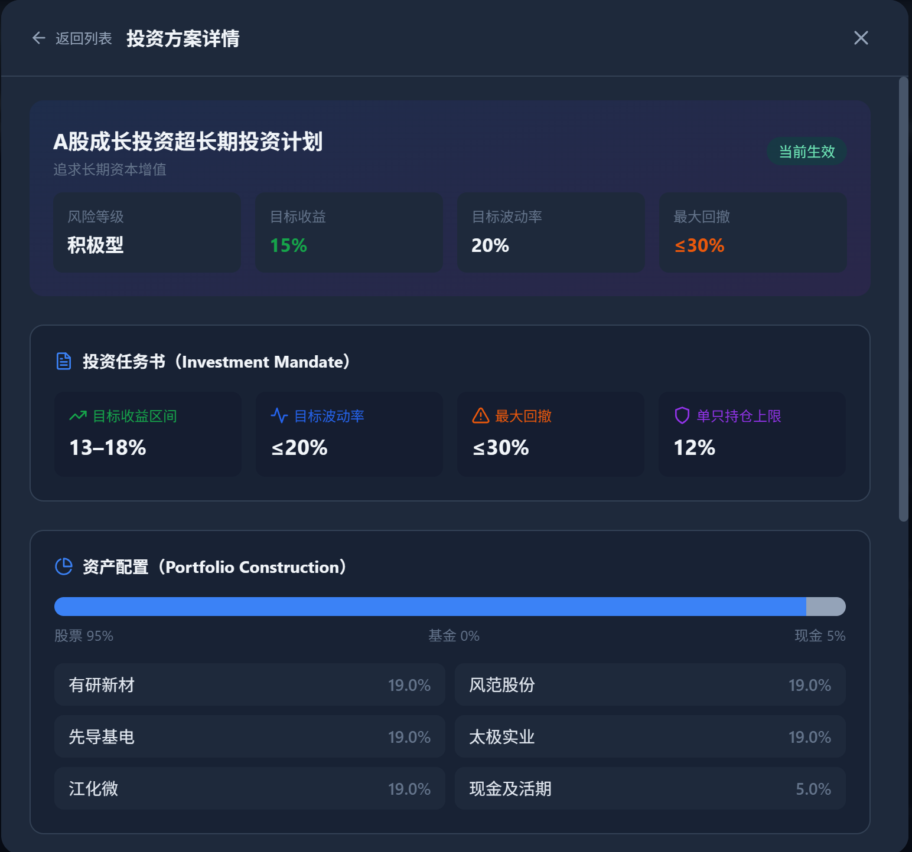

第二十六章生成属于你的第一份投资方案
26.1十二个问题，一个都不能少
第一次点开「投资规划」，我以为迎接我的是一个“一键生成”按钮。 它先不给我股票，先问我问题。证券投资经验几年？买过哪些股票类产品？靠什么做决策——别人推荐、新闻政策、基本面、技术分析，还是量化模型？风险承受等级选 R1 到 R5 哪一个？亏了怎么办？能接受的最大亏损是多少？这笔钱投多久？图的是保值、稳收益、平衡，还是增值？要不要随时能取？准备投多少？偏好哪种风格？看好哪些行业？ 十二道题，一道一道来。 我当时的反应很实在：你能直接把代码给我吗？我是来用系统的，不是来答卷的。 我忍着填完，然后做了一个小动作：把“风险承受能力”从 R4 改成 R3。屏幕上的东西立刻变了——三套候选方案里最激进的那套（C）被标了红，注明与我的风险等级不匹配；下面那张“建议持仓”表里的名字，也换了一批。 这下我明白了。这 12 个答案不是入场登记，它们是系统“给谁配什么”的全部输入。其中任何一个改了，我最后该拿的股票就变了——而且是牵一发动全身地变。 本章讲的就是这条链：12 个答案 \(\to\) 一份投资风格画像 \(\to\) 三套候选方案 \(\to\) 一份真实的股票池 \(\to\) 一张带权重的持仓表，以及这套系统每天怎么自动把它刷新一遍。26.2先量身体，再定训练量
26.3不做画像，要付什么代价
先把“为什么非做不可”讲透，否则这 12 题看起来就是走过场。 假设两个人，账面上都是 10 万元，同一天进来，拿到了同一张持仓表。 第一个人 30 岁，这笔钱五年不用，能接受三成回撤。市场跌 25%，他拿得住，甚至还有闲钱补仓。 第二个人下个月要用这笔钱付首付。同样是跌 25%，他不是“能不能扛”的问题，是“必须卖”的问题——他会在最低点被迫清仓，而这件事和股票选得好不好毫无关系。 同一张持仓表，一个能扛住，一个被逼死在最低点。差别不在股票，在画像。 所以问卷的真正作用，是给后面每一个数字定标尺：单票敢下多重、总仓位留多少现金、弱市该不该减。这些标尺全都写在答案里。跳过它，系统就只能猜；而“猜”在这个领域里的另一个名字叫“编”。26.4十二个维度，量的到底是什么
系统把这 12 题做成一份选择题问卷，参考的是国内私募基金募集时的风险测评问卷。每个维度在代码里都有稳定的字段名，不是随手写的。| 维度（题干） | 字段名 | 怎么影响后面的数字 |
| 证券投资经验 | investment_experience | 新手会把激进方案自动降一档 |
| 股票型私募产品经验 | product_experience | 反映对权益类产品的熟悉度 |
| 投资决策依据 | decision_basis | 记录你信哪一类证据 |
| 风险承受能力 | risk_tolerance | 决定风险等级（R1/R2\(\to\)保守，R3\(\to\)均衡，R4/R5\(\to\)成长） |
| 亏损应对态度 | loss_attitude | “立即止损”会把激进方案降一档 |
| 可接受最大亏损 | max_drawdown | 决定任务书里的回撤上限 |
| 计划投资期限 | investment_horizon | 短期资金会压制激进方案 |
| 主要投资目标 | investment_objective | 决定策略类型与收益预期 |
| 流动性需求 | liquidity_requirement | 决定现金缓冲与再平衡频率 |
| 计划投资金额 | capital | 决定候选只数与单标的预算 |
| 投资风格偏好 | investment_style_preference | 决定因子权重与偏好行业 |
| 行业配置偏好 | industry_preference | 决定行业倾斜 |
题干文字取自前端问卷配置；字段名是系统内部键。风险等级与策略类型的映射见 internal/plannerhost/planner.go 的 buildPlanFromProfile。
前端问卷配置 ui/src/pages/InvestmentPlanner.tsx 的 CHOICE_QUESTIONS；系统事实清单第 12 节。核对时间 2026-09-24。
26.4.1问卷的答案，先变成一份投资风格
填完 12 题，系统先算出一份投资风格（InvestmentStyle）：风险等级、预期收益、最大回撤、夏普比率，以及资产配置和行业配置两块饼图。以三档为例：| 风格 | 风险等级 | 预期收益 | 最大回撤 | 资产配置 |
| 保守（C1/C2） | 保守型 | 7%--9% | 10%--16% | 红利价值股 70% / 沪深300 20% / 现金 10% |
| 均衡（C3） | 平衡型 | 8%--12% | 15% 以内 | 量化多头股 55% / 中证500 25% / 现金 20% |
| 成长（C4/C5） | 进取型 | 12%--18% | 25%--30% | 成长龙头股 70% / 科创创业指 20% / 现金 10% |
这是前端给出的“风格预期”；后端引擎（buildPlanFromProfile）另有一套年化参数：保守 4.5%/3.5%，均衡 9.5%/11.5%，成长 13.5%/20%（收益/波动）。两处口径不同，涉及真实收益预期以后端引擎值为准。
前端 ui/src/pages/InvestmentPlanner.tsx 的 styleMap 与 generateStyle；后端 internal/plannerhost/planner.go 的 buildPlanFromProfile。核对时间 2026-09-24。
ui/src/pages/InvestmentPlanner.tsx 的 generateStyle：NOVICE / SHORT / PRESERVATION / capital < 50000 的降级分支。核对时间 2026-09-24。1。
方向永远是只降不升。这一点和后面归一化要“只收不摊”是同一种性格：宁可保守一点，绝不自作主张加码。
26.4.2同一份画像，三套候选方案
画像定完，系统不是直接给一个组合，而是给三套候选：A 红利价值、B 量化多因子、C 成长龙头。它们对应三档风险，让你自己挑，而不是替你做主。| 标签 | 名称 | 预期收益 | 波动 | 最大回撤 | 夏普 |
| A | 红利价值多头策略 | 9.0% | 13% | 16% | 0.85 |
| B | 量化多因子多头策略 | 9.5% | 11.5% | 15% | 0.95 |
| C | 成长龙头多头策略 | 14.5% | 22% | 28% | 0.82 |
三套候选的因子画像直接取自选股引擎的同一个策略模板（defensive/balanced/growth），因此规划页与选股页不会各说各话。若风险等级为保守，C 会被标为 REJECTED、风险分降到 0.30。
internal/plannerhost/planner.go 的 generateCandidates；核对时间 2026-09-24。
26.5从候选到股票池：选股引擎接棒
三套候选是“战略”，接下来要落到“战术”——具体买哪几只股票。 系统不在这里硬编码股票。它把风险等级翻译成选股模板（保守\(\to\)defensive，均衡\(\to\)balanced，成长\(\to\)growth），然后调用选股引擎跑全市场真实因子打分，最多取 200 只候选internal/plannerhost/planner.go 的 buildRealStockPool：ScreeningRequest{StrategyID, Market:"all", MaxResults:200, MinScore:0, SmallCapital, InvestorProfile, DiversifySeed}。核对时间 2026-09-24。2。
这里的“真实”两个字是硬约束：选股引擎先校验行情数据库是否挂载，没挂载就直接报错“行情数据库(stock.duckdb)未挂载”，不返回假数据系统事实清单第 9 节：ScreenStock(req) 先校验 DuckDB、再校验 HasStockDB()，未挂载直接报错。核对时间 2026-09-24。3。这也是 第二十五章 里“先把米下锅”的原因——数据没备好，这一整章都跑不起来。
选出来的结果会落到可交易股票池（tradeable_stocks）。这张表有两个身份：
- 它是投资方案的股票池落点；
- 它同时是 CIO 决策买入的白名单来源——不在池里的股票，禁止生成买入订单；池空或读取失败，则整体拒绝自主建仓（fail-closed，细节见 第十章）。
userDiversifySeed）对权重做微扰，并把整份画像透传给选股引擎，让风险承受、风格、期限真实影响因子权重internal/plannerhost/planner.go 的 userDiversifySeed 与 ScreeningRequest.DiversifySeed。核对时间 2026-09-24。4。“千人一面”在这里是不被接受的。
26.5.1买几只，由本金决定
真正决定“买几只”的，还是钱。| 本金区间 | 候选只数 | 单标的预算 | 一句话 |
| 3 万以下 | 4 | 约 25% | 钱少，只能集中 |
| 3--20 万 | 5 | 约 20% | 最常见的档（默认 10 万落在这一档） |
| 20--50 万 | 8 | 约 12% | 开始谈分散 |
| 50 万以上 | 10 | 约 10% | 分散到位 |
这是“候选名额”与“单标的预算”，不是最终权重；最终权重还要过单票上限收口（见定理 定理 26.4）。
internal/plannerhost/planner.go 的 portfolioSizing。核对时间 2026-09-24。
26.6单票上限：保守 15%，均衡 20%，成长 30%
有了候选和权重，还有一个问题：一只股票最多能占多少？系统按风险等级分三档：| 风险等级 | 单票上限 \(u\) | 基础现金 | 说明 |
保守 conservative | 15% | 10% | 回撤容忍低，不许重仓单票 |
均衡 balanced | 20% | 8% | 默认档 |
成长 growth | 30% | 5% | 与全局风控单票上限 30% 对齐 |
上限写在投资任务书（Mandate）的 PositionLimit.MaxSingleStock 里，随方案一起落库；行业上限也按等级给（保守 25%，均衡 25%--35%，成长 40%）。
internal/plannerhost/planner.go 的 buildMandateFromProfile；系统事实清单第 12 节。核对时间 2026-09-24。
26.7小额成长方案：弱市也要把钱用起来
这里有一个我一开始想不通、后来觉得挺妙的设计。 成长型、本金不到 50 万的小账户，如果碰上弱市，按常理会怎么做？提高现金、减少持仓、保守再保守。系统确实提高了现金——但它做了一个反向的补充动作：- 候选保底：因子分线过严导致候选不足时，按 0.05 一档往下放宽，直到凑够至少 3 只，最低放宽到 0.50 为止；极端情况下（行情数据不足）取评分最高者，保证股票池非空
internal/plannerhost/planner.go的buildCandidatePool：阈值兜底循环 len(scoredList) < 3 && minScore >= 0.50。核对时间 2026-09-24。5。 - 现金约 10%：弱市里普通成长方案的现金会从 5% 抬到 20%（\(\times 4\)，最高 50%）；但成长型 + 本金 \(<\) 50 万这一种情况被单独保护，只抬到约 10%
internal/plannerhost/planner.go的applyThreeLayerWeighting：if riskLevel == "growth" && totalAssets < 500000 { boostedCash = 0.10 }。核对时间 2026-09-24。6。
bear 或 bear_rangeinternal/plannerhost/planner.go 的 bearish()。核对时间 2026-09-24。7。
一句提醒：这是给小额成长账户的专门安排，不是通用规则。你把风险等级改成保守，现金立刻回到 10% 起步、弱市还要往上抬——这正是“一个答案改了，持仓就变了”的又一个实例。
26.8归一化之后，必须再收口一次
现在到了本章唯一需要动笔算的地方。前面说“候选名额 5 只、单标的预算 20%”，你可能以为权重就是每只 20%，等权。不是。系统给权重的方式是按因子分差异化分配，分高的权重更大。这就带来一个必须处理的陷阱。26.8.1先说一个“差不多对”的模型
最直觉的做法是归一化：给每只候选一个原始分数 \(\tilde w_i\)，然后让它们按比例分掉“股票那一部分预算”。占比就是26.8.2这个模型在哪里失效
失效的地方是：候选太少的时候，归一化会自动“加杠杆”。 假设某天全市场只筛出 2 只够格的候选（弱市里很常见）。归一化不管你只有 2 只——它照样把 100% 的预算摊到这 2 只身上。如果其中一只分数远高于另一只，它可能被分到 90%。 90% 的单票权重，对一个单票上限 20% 的组合意味着什么？意味着风控那条线被整个跨过去了。归一化自己没有做错任何一步，它只是忠实地执行了“总和等于 1”；是“候选太少”这个前提，让“总和等于 1”变成了“单票被迫超限”。 所以必须补第二步：收口（clamp），并把收口挤出来的那部分钱转进现金。26.8.3把两步写成算法，再证它对
26.8.4定理 26.4 在代码里长什么样
系统里 \(\Theta\) 就是“\(1\) 减去现金比例”。代码先算出所有持仓的权重之和 \(\text{totalWeight}\)，再取缩放系数overflow 并并入现金——这正是定理 定理 26.4 的 (a)(c)(d) 三部分的落地internal/plannerhost/planner.go 的 applyThreeLayerWeighting：scale := (1 - cashRatio) / totalWeight，随后 if tw > MaxSingleStock { overflow += tw - MaxSingleStock; tw = MaxSingleStock }，最后 cashRatio += overflow。核对时间 2026-09-24。8。
源码注释里留着一次真实翻车的痕迹：“该计划曾因此生成 40% 单票”——归一化把已经收口好的权重又放大回去了。修法就是“缩放后再次收口、溢出转现金”。这条注释是本章所有数学的现实版本。
26.9方案每天会自动换股
最后讲一件容易被忽略、但每个交易日都会发生的事：你的方案不是一次性快照，它每天会自动重建一次。 链路是这样的：// 调度器（复盘阶段，幂等：同一交易日只跑一次）
PlanRefreshProcessor.RebuildInvestmentPlan(ctx)
-> App.RebuildInvestmentPlan(ctx) // app_review.go
-> planner.RebuildCurrentPlanPortfolio() // plannerhost/planner.go
// 用最新全市场真实选股重建 construction 并落库
// 保留原任务书/风险等级/状态，不新建方案lastPlanRefreshDate 记着“今天重建过没有”，同一个交易日直接跳过；而这个标记还会持久化到 config/config.json 的 last_plan_refresh_dateinternal/scheduler/auto_scheduler.go 的 rebuildInvestmentPlanDay 与 persistSchedulerState。核对时间 2026-09-24。9。所以程序重启不会重跑——这条是真实事故换来的：幂等标记原来只放在内存里，重启后就又跑一遍。
重建时还会顺手刷新一次可交易股票池，让“方案持仓”和“白名单”保持一致app_review.go 的 App.RebuildInvestmentPlan：重建后调用 generatePlanStockPool，失败只记日志、不影响持仓更新。核对时间 2026-09-24。10。
至于这套每日重建怎么和复盘、改权重、换策略连成“越用越聪明”的闭环，那是 第三十二章 的内容。
26.9.1一个必须分清的细节：两个动作，两种行为
这里有一个真实的产品细节，我照实写，因为它极容易让人误解。 投资方案页上那张“AI 投资组合（建议持仓）”表里的股票，来自PlanJSON.construction.positions——这是创建方案时算好、随后写进 JSON 的一份快照。前端只把它反序列化出来展示，自己不算权重。
页面上另有一个「重新生成股票池」按钮，点它会走 GeneratePlanStockPool：重新跑一次选股、写 tradeable_stocks，并把结果计数记进 PlanJSON.stockPool 的元数据app_planner.go 的 GeneratePlanStockPool 与 generatePlanStockPool。核对时间 2026-09-24。11。但它不重算 construction.positions。所以：
- 想要真的换股——等每日自动重建（复盘阶段自动跑）；
- 点了「重新生成股票池」——只是刷新那条“股票池”卡片上的元数据计数，持仓表不会跟着变。

26.10常见误解与纠偏
RiskOSStatus 会变成 REJECTED、风险分掉到 0.30internal/plannerhost/planner.go 的 generateCandidates 末尾：if riskLevel == "conservative" { candidates[2].RiskScore = 0.30; candidates[2].RiskOSStatus = "REJECTED" }。核对时间 2026-09-24。13。它不禁止你看，但它拒绝替你背书。
26.11真实出处
- 12 题问卷的题干与选项：
ui/src/pages/InvestmentPlanner.tsx的CHOICE_QUESTIONS - 问卷答案落库与完整度计算：
internal/plannerhost/planner.go的SaveProfileAnswers、calculateCompleteness - 风险等级/收益/波动/回撤推导：同文件的
buildPlanFromProfile - 投资任务书（单票上限、行业上限、现金区间、再平衡政策）：同文件的
buildMandateFromProfile - 组合构建（候选池、三层权重、归一化收口、溢出转现金、现金仓位）：同文件的
buildPortfolioConstruction与applyThreeLayerWeighting - 真实全市场选股与画像透传：同文件的
buildRealStockPool；选股引擎internal/screener/screener_service.go - A/B/C 三套候选：同文件的
generateCandidates - 每日自动重建：
internal/plannerhost/planner.go的RebuildCurrentPlanPortfolio；app_review.go的App.RebuildInvestmentPlan；internal/scheduler/auto_scheduler.go的PlanRefreshProcessor、rebuildInvestmentPlanDay、persistSchedulerState - 股票池白名单与 fail-closed：
internal/cio/cio.go；策略引擎internal/policy/engine.go的硬限制与暂停建仓开关（详见 第十章） - 数据表：
tradeable_stocks（可交易池）、investment_plans（投资方案）；幂等标记last_plan_refresh_date持久化于config/config.json
- 打开「投资规划」，把 12 题如实填完，记下 A/B/C 三套候选的预期收益与最大回撤；然后只改一题——把风格偏好从“成长投资”改成“红利价值”——再看一遍：B 那套的名称与收益预期会跟着变。
- 把“风险承受能力”从 R4（进取）改成 R3（均衡），并把“可接受最大亏损”改到 15% 以内。对照 表 26.5：你的单票上限应当从成长档的 30% 掉到均衡档的 20%——去看方案详情里任意一只股票的权重，确认没有超过 20%。
- 点一次「生成股票池」，然后到「我的投资 / 投资方案」页确认：股票池卡片上出现了策略模板（防御型/均衡/成长型）、提交只数、生成时间这些元数据。
- 下一个交易日复盘时段之后，再打开同一份方案，比较持仓表里的股票代码：变了，说明每日自动重建真的跑了；没变，去
config/config.json看last_plan_refresh_date是否已等于今天。 - 拿一张纸手算定理 定理 26.4(c) 的反例：取 \(\tilde w=(9,1)\)、\(u=0.20\)。先只归一化算 \(\max_i w_i\)，再按两步法算 \(w^\star\) 与现金 \(\rho\)。两次结果一对照，“自动加杠杆”就变成了你自己算出来的数。